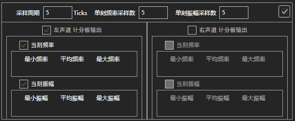
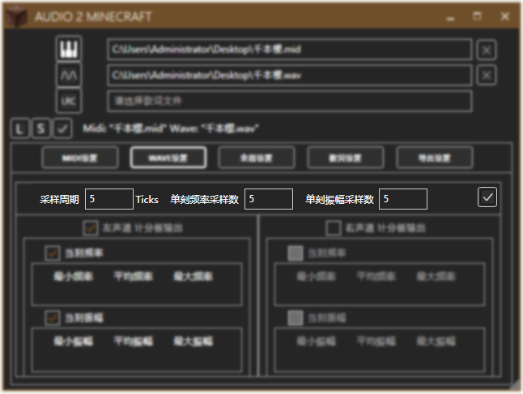
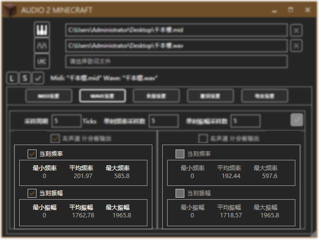
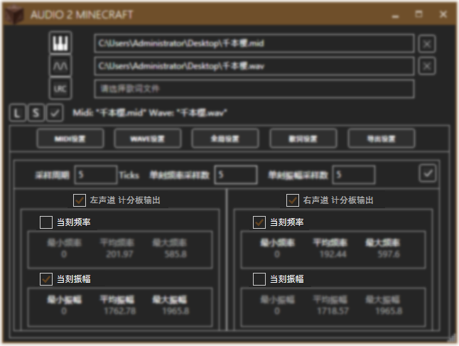

导入Wav文件后，你可以在Wave设置中设置Wave的属性。


设定采样周期，频率和振幅的采样数后，点击右边的对勾开始采样，并在下方获得预览。
每m刻采样一次，获取这m刻中波形。（也表示计分板输出波形数据的周期）
将样本分n段进行统计。（也表示每次计分板输出波形数据的个数）

预览中能分别显示左右声道的频率与振幅的统计值。

点击方框以启用或禁用一段数据的输出。
别忘了点击右上方的对勾以保存设置。
如果没有更改采样周期或采样数，点击右上方的对勾只将保存设置，而不会重新采样